MagicSort — Kiểm thử LDPlayer và ảnh bằng chứng
Ngày kiểm tra: 10/10/2026 · MagicSort · 0.0.3129 đang cài; mã decompile 0.0.3063 (09/09/2026).
Quy tắc ghi kết quả
Mỗi case có tiền điều kiện, thao tác, kết quả quan sát, ảnh và đối chiếu code/config. Đã quan sát chỉ xác nhận nhánh chạy trong phiên này. Chưa chạy không phải pass. Không truy cập được có thể do eligibility hoặc dữ liệu phiên. Bất nhất yêu cầu nêu hai nguồn cụ thể, không tự chọn nguồn thuận tiện.
Ma trận case biên mở rộng
| Case | Tiền điều kiện và thao tác | Kỳ vọng để kiểm | Bằng chứng cần lưu |
|---|---|---|---|
| Hết thời gian khi animation còn chạy | Đợi thao tác gần hết giờ | Một kết quả cuối nhất quán; không vừa thắng vừa thua | Video, timestamp, state, reward log |
| Hai lần chạm Play On | Popup mở, đủ coin | Không trừ hai lần cho một grant | Coin trước/sau, purchase attempt ID |
| Hủy thao tác booster | Chọn booster rồi quay lại trước xác nhận | Không tiêu vật phẩm nếu chưa thực thi theo luật | Inventory, ảnh trạng thái chọn |
| App xuống nền giữa màn | Vào background rồi resume | Timer/board xử lý đúng thiết kế của loại màn | Ảnh trước/sau, app version |
| Mất mạng khi claim | Phần thưởng đủ điều kiện | Không mất quà, không phát trùng khi retry | Local pending, receipt/claim status |
| Kỳ mới đến khi popup kỳ cũ mở | Giữ popup qua hạn | Kết quả cũ không lẫn tiến độ mới | Hai instance ID và clock |
| Thay đổi collection | Gói thưởng có biến thể WithCollection | Chọn đúng quà và không dùng card pack đã hết mùa | Config và payload thưởng |
| Thua sát checkpoint | Chỉ thiếu một win tới chốt | Rơi đúng chốt, không xóa toàn bộ lịch sử | Progress trước/sau |
| Rewarded không có quảng cáo | Nút khả dụng nhưng SDK no-fill | Không treo input, không tiêu quyền mà không trả gì | SDK callback và ảnh |
| IAP hủy | Mở sheet thanh toán, hủy | Không phát quà, có thể thử lại | UI kết quả và inventory |
| IAP thành công nhưng callback muộn | Sandbox billing | Xác minh rồi cấp một lần, khôi phục sau restart | Transaction ID đã ẩn và log xác minh |
| Không đủ coin | Tài khoản kiểm thử ít coin | Mở đúng shop/offer, quay lại giữ ngữ cảnh | Before/after, source/reason |
| Đã mua pass rồi kỳ kết thúc | Pass active + unclaimed | Trao đúng quà, gỡ quyền theo quy định | Entitlement expiry và reward log |
| Mốc mở khóa | L−1, L, L+1 | Hiển thị đúng giới thiệu, không show trước dữ liệu | 3 trạng thái cùng build/config |
| Server trả config không hợp lệ | Môi trường test có quyền điều khiển backend | Fallback có kiểm soát, không đè cache tốt | Validation reason và selected source |
Các case fault injection, mua thành công và tài khoản mới cần môi trường riêng phù hợp. Bảng trên là kế hoạch kiểm chứng mở rộng, không phải tuyên bố đã thực hiện tất cả trên tài khoản hiện tại.
Kết quả thực thi mới
Đọc bảng test và gallery được sinh từ test_results.json; chỉ các dòng có trạng thái Đã xác minh mới là kết quả được xác nhận. Ảnh thô giữ nguyên trong screens/test_20261010, thao tác có timestamp trong facts/runtime/test_20261010/actions.jsonl.
Đối chiếu tài nguyên sau phiên
MagicSort: coin 999.996.759 → 999.995.869 = −900 Play On +10 Daily win; Undo −1; Extra Bottle −1; level thường vẫn 351; Daily hoàn thành ngày 10, đếm 1 ngày. Daily lượt thắng dùng 53 nước hợp lệ từ seed, không thay dữ liệu game.
Snapshot before/after và actions.jsonl được giữ trong facts/runtime/test_20261010. Raw playerprefs dành cho tra cứu nội bộ, không đưa vào workbook. Phiên này không tạo giao dịch thật và không chỉnh inventory/config/seed.
| ID | Case / thao tác | Kết quả | Trạng thái | Ảnh |
|---|---|---|---|---|
| MS-T01 | Vào level 351 | Bàn 12 chai, 2 chai trống và chai nhỏ khóa; booster 9999/9999/9991. Tài nguyên từng chỉnh trước phiên này. | Đã xác minh | MS-02-level-entry.png |
| MS-T02 | Đổ sai màu: chai 1 sang chai 2 | Màu hồng không đổ vào đầu màu tím; bố cục giữ nguyên. | Đã xác minh | MS-03-invalid-color.png |
| MS-T03 | Đổ vào chai trống | Màu hồng đi vào chai trống dưới; lộ lớp nâu của chai 1. | Đã xác minh | MS-04-valid-pour.png |
| MS-T04 | Undo bước vừa đổ | Màu hồng trở lại, chai nhận rỗng; Undo 9999 → 9998. Lớp nâu đã lộ vẫn nhìn thấy: Undo không che lại thông tin vừa khám phá. | Đã xác minh | MS-05-undo.png |
| MS-T05 | Extra Bottle | Thêm chai trống, bàn reflow từ 12 lên 13 chai; số lượng 9991 → 9990. | Đã xác minh | MS-06-extra-bottle.png |
| MS-T06 | Quit — cảnh báo mạng | Menu Quit mở cảnh báo mất 1 life. | Đã xác minh | MS-09-quit-life.png |
| MS-T07 | Quit — cảnh báo rank | Sau xác nhận mất mạng còn cảnh báo rank Master League; phải xác nhận tiếp. | Đã xác minh | MS-10-quit-followup.png |
| MS-T08 | Quit — Failed và thưởng | Failed hiển thị 20 coin nhưng coin vẫn 999996759; Home 5 → 4 life. Không xem số 20 ở đây là đã cấp. Đối chiếu MS-13-home-return. | Đã xác minh | MS-11-failed.png |
| MS-T09 | Home popup chain | Jetpack Race được đưa lên sau fail; ảnh có nút Start/infinite life nhưng phiên này không nhấn tham gia. | Đã xác minh | MS-12-portal.png |
| MS-T10 | Endless Portal — cổng trả tiền | 1.300 coin / 81.000 VND; ô tiếp theo FREE có khóa. Chưa giao dịch. | Đã xác minh | MS-14-endless-portal.png |
| MS-T11 | Chạm ô FREE bị khóa | Hiện Accept previous offer to open; không cấp phần thưởng. | Đã xác minh | MS-15-locked-free.png |
| MS-T12 | Daily calendar | Ngày 10/10/2026; mốc lịch 3/7/14/25 ngày. | Đã xác minh | MS-16-daily-calendar.png |
| MS-T13 | Daily tutorial | 4 chai đầy và 3 trống; ảnh 02:58, config tutorial 180 giây. | Đã xác minh | MS-17-daily-start.png |
| MS-T14 | Daily hết giờ | Out of Time; Play On 900 coin hoặc Give Up. Ảnh MS-18/19/20 chỉ countdown, không dùng làm bằng chứng hết giờ. | Đã xác minh | MS-21-current.png |
| MS-T15 | Daily Play On lần đầu | Sau nhấn, timer 00:59; cache coin 999996759 → 999995859, giảm đúng 900. Cộng 60 giây. | Đã xác minh | MS-22-daily-playon.png |
| MS-T16 | Daily — giải màn bằng nước đi hợp lệ | Chạy 53 bước đổ từ seed tutorial bằng ADB; bốn chai đơn màu đóng nắp khi còn 01:10. Không sửa save, timer hay layout; không dùng booster trong lượt thắng. Chuỗi không được chứng minh tối ưu. | Đã xác minh | MS-solve-53.png |
| MS-T17 | Daily — nhận thưởng thắng | Perfect! thưởng 10 coin; sau Continue cache từ 999995859 lên 999995869. Daily reward không bằng thưởng Regular 20 coin. | Đã xác minh | MS-29-win-result.png |
| MS-T18 | Daily — cập nhật lịch và khóa ngày mai | Ngày 10 có dấu hoàn thành, bộ đếm 0 → 1 sau animation; nút October 11 khóa với 7h28m. Level thường vẫn 351. | Đã xác minh | MS-31-calendar-settled.png |
| MS-T19 | Thanh toán thật / restore / refund | Chưa thực thi; chỉ phân tích đường mã và catalog. Không có receipt test. | Chưa chạy | |
| MS-T20 | Fresh account / hết tài nguyên | Chưa chạy; tài khoản hiện hữu có tài nguyên chỉnh sẵn. | Chưa chạy |
MS-T01 — Vào level 351
Bàn 12 chai, 2 chai trống và chai nhỏ khóa; booster 9999/9999/9991. Tài nguyên từng chỉnh trước phiên này.

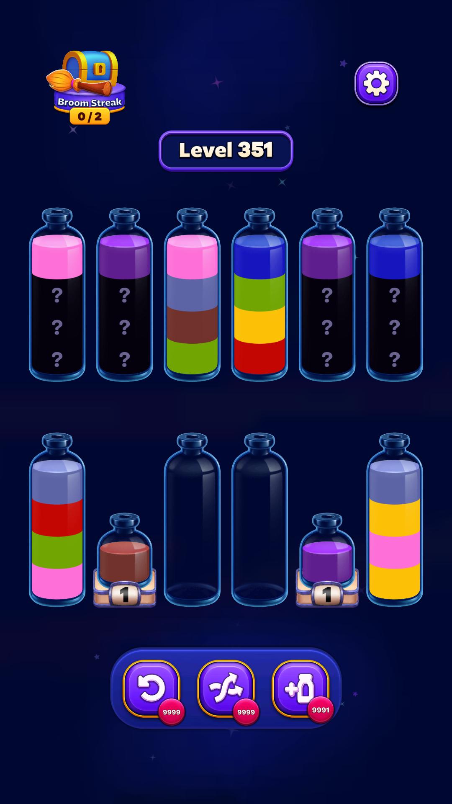
MS-T02 — Đổ sai màu: chai 1 sang chai 2
Màu hồng không đổ vào đầu màu tím; bố cục giữ nguyên.

MS-T03 — Đổ vào chai trống
Màu hồng đi vào chai trống dưới; lộ lớp nâu của chai 1.

MS-T04 — Undo bước vừa đổ
Màu hồng trở lại, chai nhận rỗng; Undo 9999 → 9998. Lớp nâu đã lộ vẫn nhìn thấy: Undo không che lại thông tin vừa khám phá.

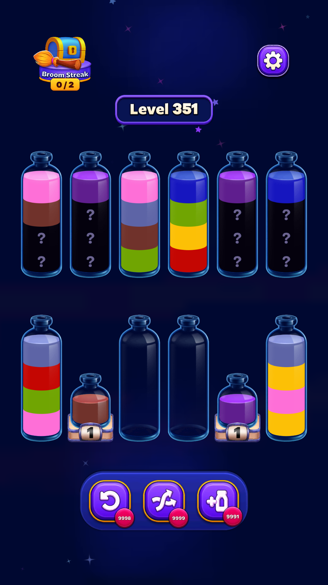
MS-T05 — Extra Bottle
Thêm chai trống, bàn reflow từ 12 lên 13 chai; số lượng 9991 → 9990.

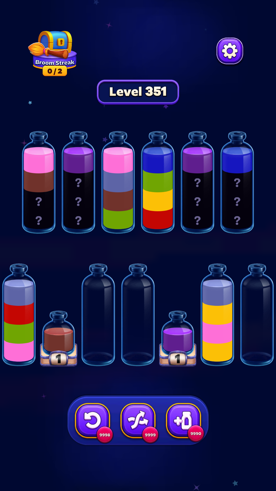
MS-T06 — Quit — cảnh báo mạng
Menu Quit mở cảnh báo mất 1 life.

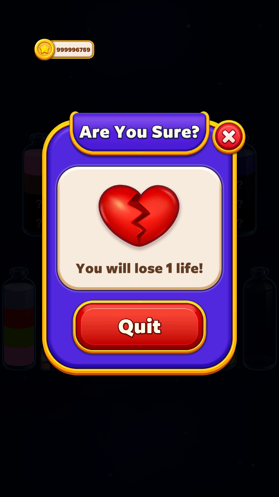
MS-T07 — Quit — cảnh báo rank
Sau xác nhận mất mạng còn cảnh báo rank Master League; phải xác nhận tiếp.

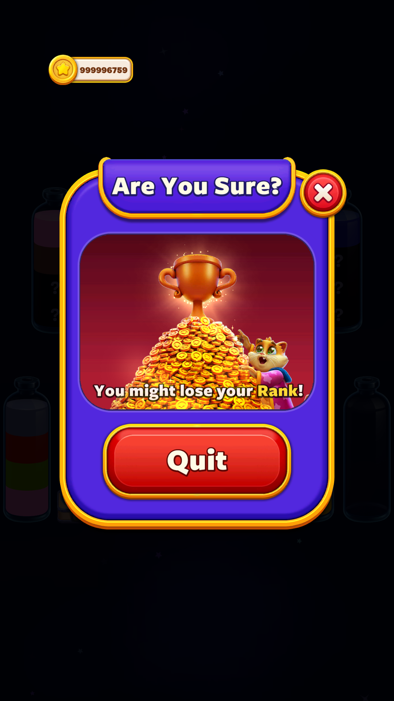
MS-T08 — Quit — Failed và thưởng
Failed hiển thị 20 coin nhưng coin vẫn 999996759; Home 5 → 4 life. Không xem số 20 ở đây là đã cấp. Đối chiếu MS-13-home-return.

MS-T09 — Home popup chain
Jetpack Race được đưa lên sau fail; ảnh có nút Start/infinite life nhưng phiên này không nhấn tham gia.

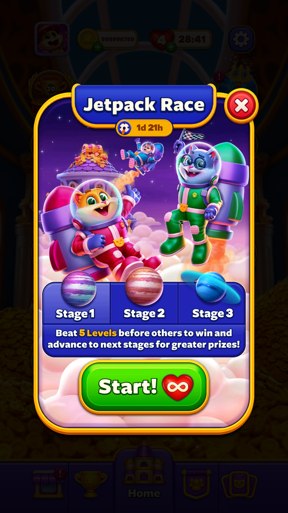
MS-T10 — Endless Portal — cổng trả tiền
1.300 coin / 81.000 VND; ô tiếp theo FREE có khóa. Chưa giao dịch.

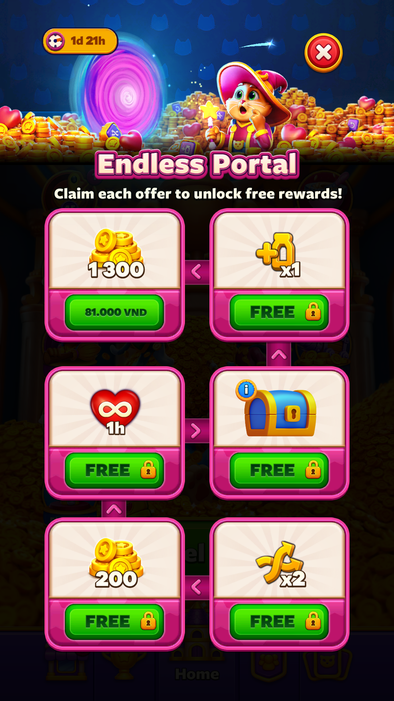
MS-T11 — Chạm ô FREE bị khóa
Hiện Accept previous offer to open; không cấp phần thưởng.

MS-T12 — Daily calendar
Ngày 10/10/2026; mốc lịch 3/7/14/25 ngày.

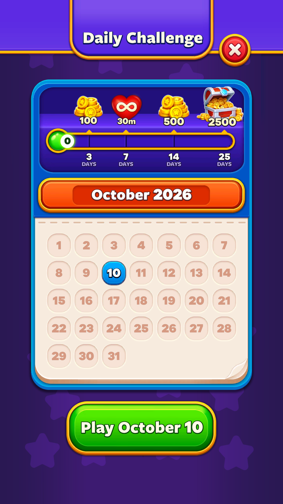
MS-T13 — Daily tutorial
4 chai đầy và 3 trống; ảnh 02:58, config tutorial 180 giây.

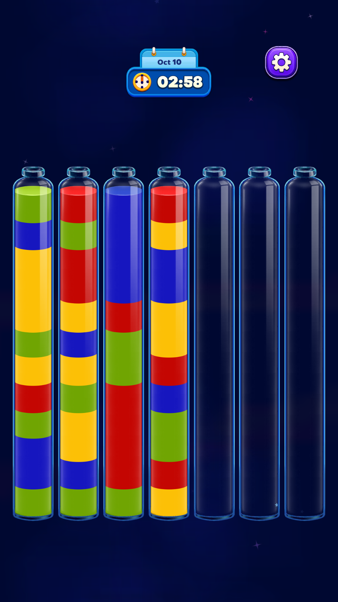
MS-T14 — Daily hết giờ
Out of Time; Play On 900 coin hoặc Give Up. Ảnh MS-18/19/20 chỉ countdown, không dùng làm bằng chứng hết giờ.

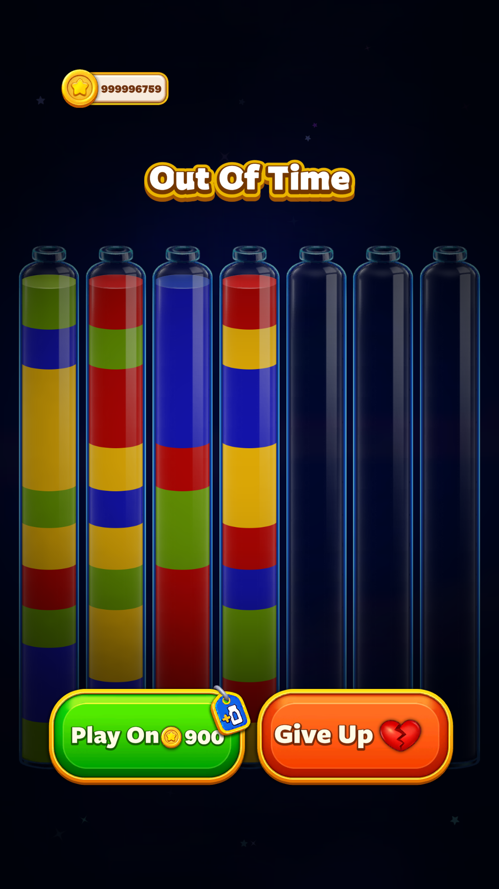
MS-T15 — Daily Play On lần đầu
Sau nhấn, timer 00:59; cache coin 999996759 → 999995859, giảm đúng 900. Cộng 60 giây.

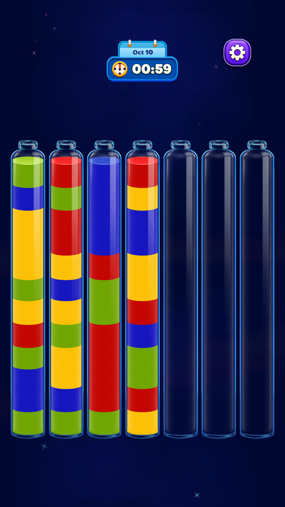
MS-T16 — Daily — giải màn bằng nước đi hợp lệ
Chạy 53 bước đổ từ seed tutorial bằng ADB; bốn chai đơn màu đóng nắp khi còn 01:10. Không sửa save, timer hay layout; không dùng booster trong lượt thắng. Chuỗi không được chứng minh tối ưu.

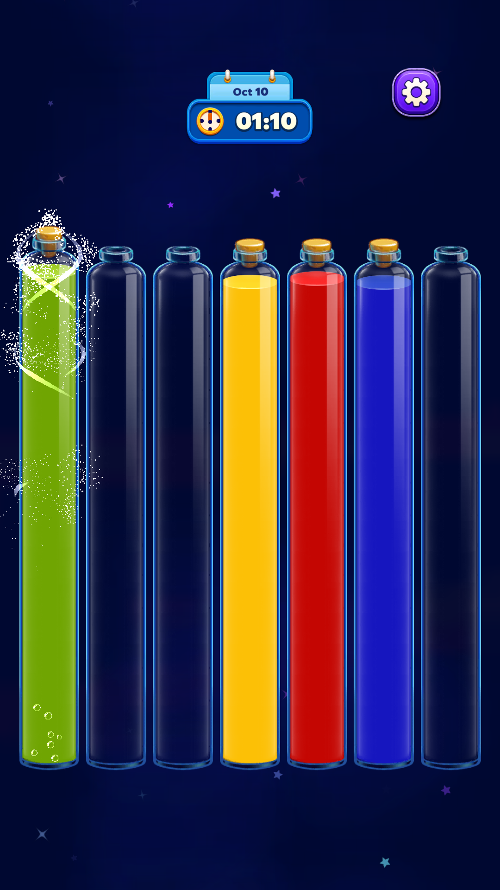
MS-T17 — Daily — nhận thưởng thắng
Perfect! thưởng 10 coin; sau Continue cache từ 999995859 lên 999995869. Daily reward không bằng thưởng Regular 20 coin.

MS-T18 — Daily — cập nhật lịch và khóa ngày mai
Ngày 10 có dấu hoàn thành, bộ đếm 0 → 1 sau animation; nút October 11 khóa với 7h28m. Level thường vẫn 351.

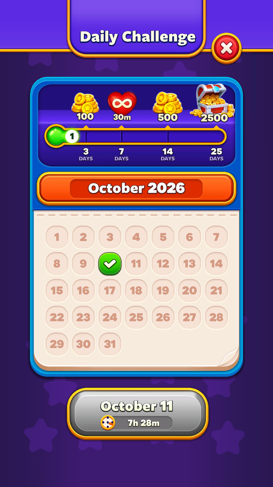